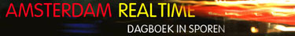
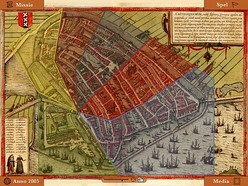
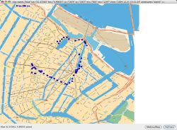
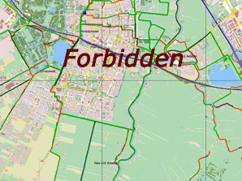
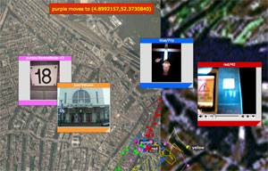

1. About [www.geotracing.com/pres1]
- GeoTracing introduction
- through waypoints and Points of Interest on the web
- clicking a
waypoint opens link in new page
- closing that page returns you here
2. History [www.skeeler.org]
- 1996-
- my attempt to create skate-routes around Amsterdam
3. Inspiration1 [realtime.waag.org]
- 2002 - Amsterdam RealTime
- creating traces with GPS/GPRS

4. Inspiration2 [frequency 1550]
- 2004/2005 - Frequency 1550
- location-based city game


5. GeoSkating Project [www.geoskating.com]
- mar-jun 2005
- create skate routes using GPS+Mobile phone
- route-colouring by asphalt quality
- annotation with location-tagged media
- live tracing
6. We are Sailing [www.geosailing.com]
- aug 2005
- track 24 sailing race IJsselmeer
- route-colouring by speed
- GeoSkating clone
7. ROADBLOCKS!!
- threat by Dutch Ordinance Survey (Topografische Dienst)
- US: mapdata publicly available
-
Europe: GIS-innovation is hindered

8. Inspiration - Google Maps and Web 2.0
- Google Maps API invites for both innovation and hacking
- DHTML and AJAX pushed forward
9. GeoTracing Project [www.geotracing.com]
- sep 2005-
- extensible software platform
- multi-user GPS tracklogging (mobile, GPX, browser)
- geotagging: media, POIs etc
- Content Management (KeyWorx)
- live tracing (Pushlets)
- location-based services
- many possible apps: sports, games, biology etc.
10. N8Spel [www.n8spel.nl]
- okt/nov 2005
- Amsterdam Museum Night
- first GeoTracing app
11. TraceLand [www.geotracing.com/tland]
- TraceLand - sandbox for GeoTracing experiments

12. Colofon

[www.geotracing.com]
Astrid Janssen: GeoTracing logo-design [astridjanssen@metdubbel-s.nl]
[www.justobjects.nl]
[www.pushlets.com]
[www.waag.org]
[www.keyworx.org]